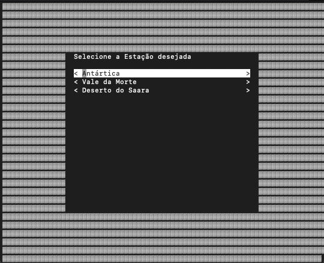
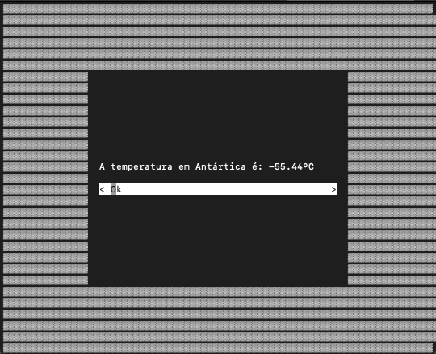

Relatório do Trabalho de Redes II
André Miguel Sikora Marques
GRR20182593
Kevin Katzer
GRR20182614
Inicialmente, cogitamos utilizar um servidor real para consumo de dados de temperatura atuais de partes remotas de nosso planeta. Porém, ao pesquisar APIs que nos retornassem esses dados, percebemos que essas APIs implementavam o seu próprio cache interno, o que atrapalharia nosso trabalho.
Dessa forma, decidimos implementar uma pequena API com 3 endpoints: /antarctica, /deathvalley e /saaradesert. Cada endpoint retorna uma temperatura aleatória em uma variação pré-definida: -89.2ºC a 15ºC na Antártica, 2ºC a 57ºC no Vale da Morte e -4ºC a 47ºC no Deserto do Saara.
A API foi implementada em python com ajuda da biblioteca FastAPI, pois é uma biblioteca muito rápida e fácil de usar.
Implementação da API
Log da API
Para o servidor, foi implementado um dicionário com 3 entradas, uma para cada estação (Antártica, Vale da Morte e Deserto do Saara). Cada uma dessas entradas possui dois campos: temperature e updated_at com os dados da última temperatura encontrada e a data e hora que a requisição foi feita, respectivamente.
Para disponibilização da tabela para o cliente, um socket é aberto e, em loop, o servidor ouve qualquer requisição que recebe através desse socket. Ao encontrar uma requisição, os dados recebidos devem ser uma string contendo a estação desejada ("ANTARCTICA", "DEATHVALLEY" ou "SAARADESERT"). Dependendo da string recebida, o servidor consulta sua tabela cache para descobrir se a última requisição feita à API para aquela estação foi a mais de 30 segundos. Se sim, é feita uma nova requisição à API e o campo da tabela é atualizado, com esse valor novo sendo retornado ao cliente. Se não, o valor retornado é o próprio encontrado na tabela e não é feita uma requisição à API.
Implementação do Servidor
Log do Servidor
O cliente foi implementado utilizando uma biblioteca chamada urwid para facilitar a usabilidade para o usuário.
Ao rodar o programa, o cliente apresenta uma tela oferecendo que o usuário escolha entre uma das 3 opções de estação meteorológica:

Ao escolher a estação desejada, o programa faz uma requisição via socket ao servidor com a opção.
O programa então apresenta o resultado para o usuário, que pode refazer o processo.

A API, o Servidor e o Cliente podem todos serem rodados a partir do comando make. Para isso, é necessário primeiro instalar as dependências do projeto com o comando make install.
Com as dependências instaladas, deve-se rodar os três processos concorrentemente em ordem: primeiro a API, com o comando make api, então o servidor, com o comando make server e enfim o cliente, com o comando make client.
Makefile